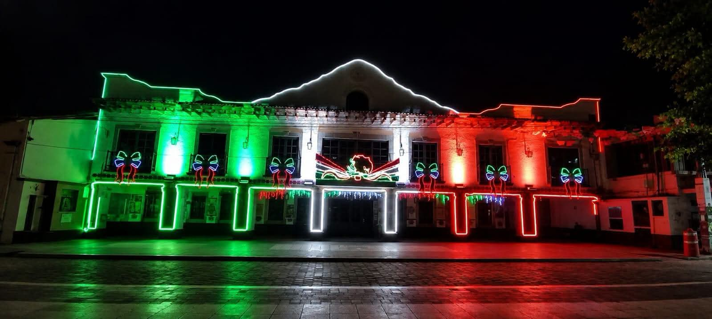
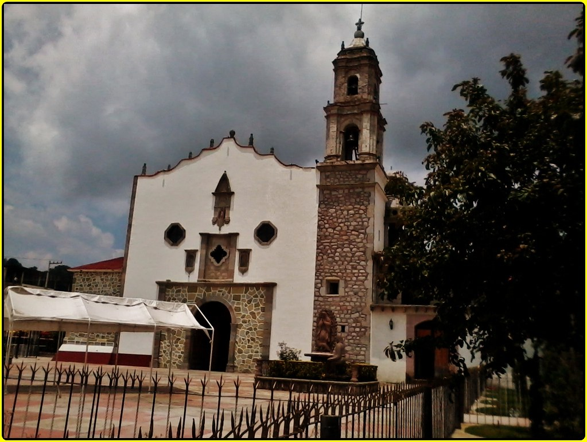
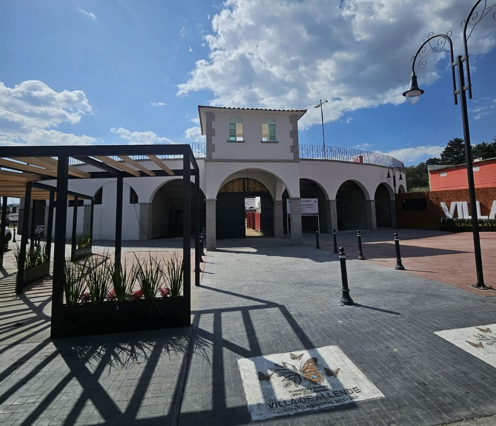
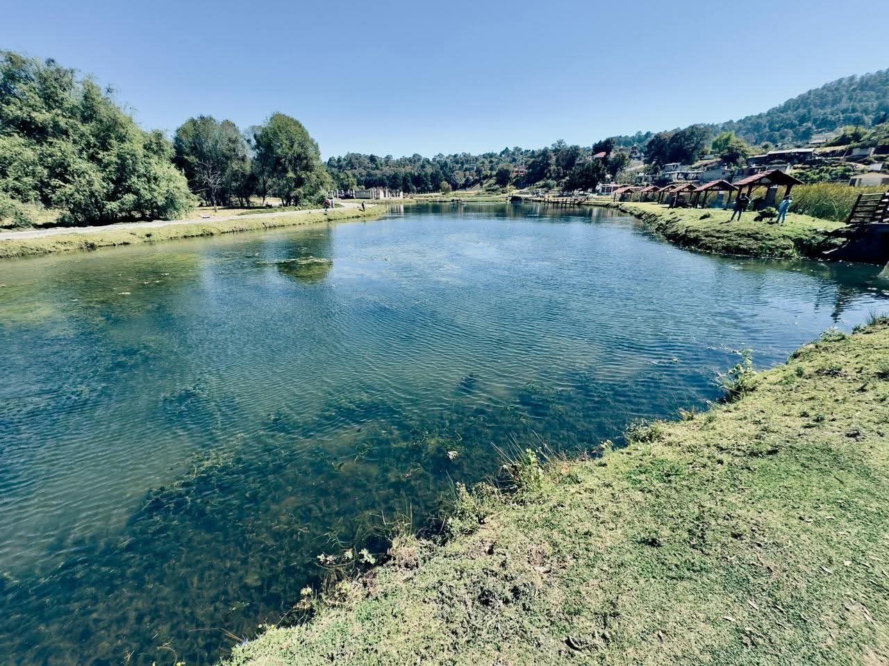
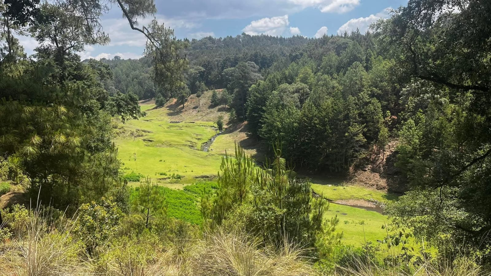

🏛️ Presidencia Municipal
Edificio gubernamental donde se realizan trámites y actividades administrativas del municipio.
Conoce, descubre y disfruta Villa de Allende
Villa de Allende cuenta con diversos lugares que forman parte de su identidad cultural, histórica y natural. Conoce algunos de ellos:

Edificio gubernamental donde se realizan trámites y actividades administrativas del municipio.

Templo católico dedicado a San José, considerado uno de los principales símbolos religiosos.

Espacio utilizado para eventos culturales, festivales y celebraciones.

Espacio recreativo utilizado para la convivencia familiar y actividades al aire libre.

Área natural protegida ideal para senderismo y observación de la naturaleza.